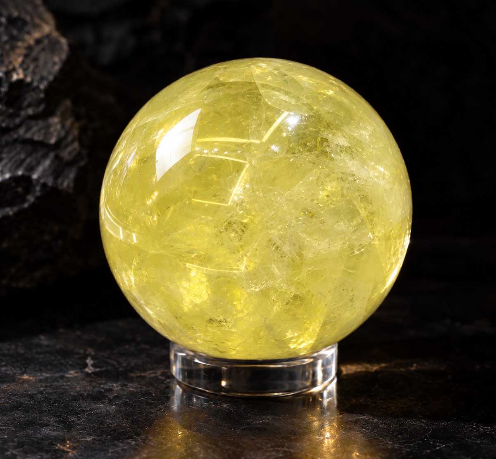
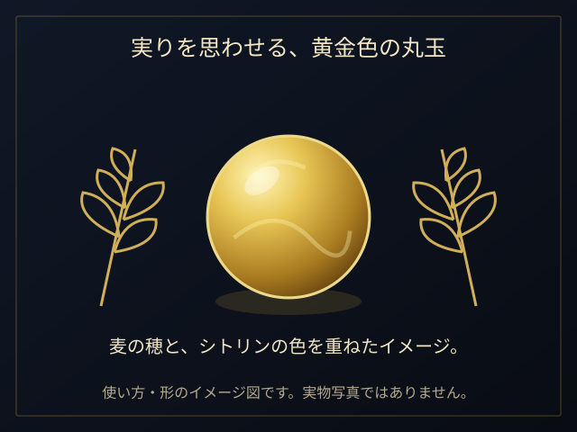
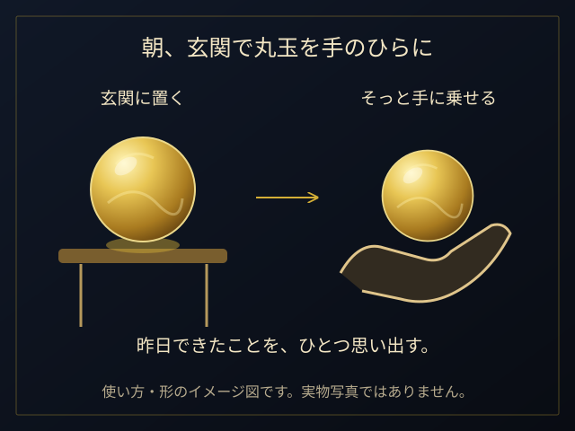

鑑定で選ばれた、あなたへのご案内
BRAZILIAN CITRINE · 2027
実りの
シトリン
2027年も、自分のことは「また今度」ですか。
その願いを、毎朝思い出せる形に。
2027年こそ、自分を後回しにしない。
受付 11/30(月)0:00まで
実物の丸玉シトリンの写真です。天然石のため、色味・模様・大きさには個体差があります。
受付終了まで、あと
0日00時間00分00秒
BRAZILIAN CITRINE · 2027
2027年も、自分のことは「また今度」ですか。
その願いを、毎朝思い出せる形に。
2027年こそ、自分を後回しにしない。
実物の丸玉シトリンの写真です。天然石のため、色味・模様・大きさには個体差があります。
「また今度」で、今年も終わらせない。
お迎えをご希望の方は、お早めに。
みづきです。
このページは、シトリン鑑定で選ばれた方にだけお送りしている、お迎えのご案内です。
11月25日の夜にお返しした結果は、文字でした。
読んだときの気持ちを、忙しい毎日の中でも思い出してほしい。
だから、あの結果を、毎朝手に乗せられる形にしました。
家族の予定は決まっているのに、自分がしたいことは今年も保留。
2027年は、その順番を変えていきませんか。自分の願いを、毎日の予定に戻すために。
がんばったことを数えずに、すぐ次をがんばっている。これが「摘み忘れ」です。
夜に1つ数えて、朝、玄関で石に置く。
目に入り、手に触れるものなら、朝の習慣に結びつけられる。私が視て「もう実っている」と認めた印を、暮らしの中へ。
毎朝の家のこと。毎月のやりくり。職場で、人が嫌がる役を引き受けること。親の様子を見に行くこと。
この1年、やめずに続けてきたことを、1つだけ思い出してください。
それを、数えたことはありますか。
たぶん、ないと思います。続けている人は、数える前に、次を始めてしまうからです。
家族の用事を済ませて、仕事を終えて、ようやく一息つく夜。
自分がしたかったことには、今日も手をつけられなかった。
そんな日が重なると、こう感じることはありませんか。これだけやってきたのに、自分には何も残っていない。
できなかったことばかり数えて、できたことは当たり前にしてしまう。
ここでは、その見落としを「摘み忘れ」と呼びます。
あなたのがんばりも、もう乾いています。取り込んでいないだけ。
取り込む、とは、数えることです。
人からの「助かった」のひとこと。休んでいい日。頼っていい相手。
乾いたままのものが、まだ、そこにあります。
摘み忘れの人の、3つの共通点
1つでも、思い当たりましたか。
責めたいのではありません。
数えずに次をがんばってきたのは、守るものがあったからです。
「まだ足りない」が口癖になると、休むことも、人に頼むことも後回しになりがちです。
まずは、今日できたことを1つ認める。そのうえで、明日は自分のために何をするかを選ぶ。
「来年こそ」を、願ったままで終わらせない。
そのために、思い出すきっかけを、毎朝通る場所に置くのです。
新しい年の目標を決めても、翌朝には家族や仕事の用事が始まる。
自分の願いは、また一番最後になる。変えたいのは、その毎朝の始まり方です。
実った麦の穂を思わせる黄金色。「足りない」より、すでに積み重ねたものへ目を向ける印として選びました。
毎朝、手のひらに乗せる丸玉。眺めるだけで終わらせず、一度立ち止まる時間をつくるための形です。
私が視て、「もう実っている」と認めた印。鑑定で受け取った言葉を、暮らしの中へ持ち帰るための一石です。
ノートには、願いを言葉で残せます。この石は、玄関に置いて、目と手で思い出すためのもの。
「読む」だけで終わらず、「手に取って、今日の一歩を決める」ところまでつなげてほしいのです。
黄色い、水晶の仲間の石です。昔から、実りを受け取る石と言われてきました。黄金色が金貨や麦の穂を思わせることから、商人が守り石にしてきたと伝わっています（言い伝えです）。
この石の役割は、1つ。私が視て、「もう実っている」と認めた印です。
家族からの「ありがとう」も、自分の時間も。入ってきた分を「足りない」で流さずに、残しておくための印です。


天然のシトリンは、1つとして同じ色がありません。1つずつ、光に透かして、色を見て選びました。そのため、数には限りがあります。
寝る前に、今日したことを1つ数える。小さくていいです。心の中で大丈夫です。
出かける前に、玄関で石を手のひらに乗せる。
昨日できたことを1つ認めたら、今日、自分のためにすることを1つ決める。
石を元の場所へ。決めた一歩を、今日の予定に入れる。出かけない日も同じです。

それは、正しかったんです。手放す必要はありません。
役割が違うだけです。
シトリンは、あなたを別の人に変える石ではありません。あなたがもう手にしている実りを、私が視て認めた印です。効果・効能を保証するものではありません。
だから私は、売る前に視ます。あなたを視ていないのに、お渡しすることはしません。鑑定で選ばれた方にだけ、このご案内をお送りしています。
こうなる、とお約束するものではありません。
ただ、2027年の12月に1年をふり返るとき、できたことを数えている。
そういう年末を、迎えていただきたいんです。
行きたかった場所。学んでみたかったこと。ゆっくり過ごしたかった時間。
「落ち着いたら」と思っているうちに、また一年が過ぎていく。
2027年こそ、自分の人生にも予定を入れる。
その決意を、毎朝思い出すために迎えるのが、実りのシトリンです。
お届けするのは、一つずつ光に透かして、色を見て選んだ天然シトリンの丸玉。お渡しする前に、私が視る一石です。
黄金色を眺める楽しみ。手のひらに乗せる朝の時間。鑑定の言葉を思い出し、自分の願いに立ち返る印。
石そのものと、これから暮らしの中で使っていく意味を合わせて、お伝えしています。
この価格は、石のお代です。シトリン鑑定のお代はいただいていません。送料を含むお支払い総額は、この下に明記しています。
受付は、2026年11月30日 00:00まで。
お届け時期はSTORESの商品ページをご確認ください。
2027年、自分の願いを毎朝思い出すための一石を。
1つずつ光に透かして選んだ、天然のシトリンです。渡す前に、私が視ます。
お代がかかるのは、この石だけです。シトリン鑑定のお代は、いただいていません。
「また今度」で、今年も終わらせない。
お迎えをご希望の方は、お早めに。
お支払い総額 80,800円。STORESの決済ページが開きます。注文確認メールが届けば、受付完了です。
効果・効能を保証するものではありません。
1つ迎えれば、毎朝、同じ玄関で、あなたの「昨日の1つ」を受け取る印になります。
1年続けると、365回、認められてから出た朝になります。
| 商品名 | 実りのシトリン（天然シトリン） |
|---|---|
| お代 | 79,800円（税込）／通常価格149,800円 |
| 送料 | 1,000円（お支払い総額 80,800円） |
| 受付期間 | 11月30日(月) 0:00まで |
| 大きさ | 手のひらで包める大きさ（天然石のため1つずつ異なります） |
| お届け | 中身の分からない無地の箱でお送りします。届く時期は商品ページをご確認ください。 |
| お支払い | STORESの決済ページで行います。クレジットカードでお支払いの場合、カード会社のサービスで分割払いに変更できます（カード会社によって異なります）。分割払いには、カード会社の手数料がかかる場合があります。 |
| ご案内先 | シトリン鑑定にご応募くださり、鑑定で選ばれた方 |
STORESの決済ページが開きます。お支払い総額 80,800円
私が視て「もう実っている」と認めた印として、夜に数えた1つを朝の玄関で置くための天然石です。シトリンにまつわるお話は言い伝えです。効果・効能を保証するものではありません。
はい。役割が違うので、いま置いているものの隣に置いていただけます。
天然石のため、色味・模様・大きさは1つ1つ異なります。掲載写真は実物の丸玉シトリンです。お届けする一石ごとに個体差があります。
中身の分からない無地の箱でお送りします。
クレジットカードでお支払いいただいた場合、お使いのカード会社のサービスで、あとから分割払いに変更できます。変更の方法や回数はカード会社によって異なりますので、カード会社にご確認ください。分割払いには、カード会社の手数料がかかる場合があります。
STORESから注文確認メールが届いていれば受付済みです。届かない場合は、ご注文番号とお名前をLINEでお知らせください。カード番号や確認コードは送らないでください。
STORESの商品ページと、特定商取引法に基づく表記をご確認ください。
2026年11月30日 00:00までです。11月29日(日)の夜が最終受付となります。ご希望の方は、締切前にSTORESでお手続きください。
ずっと順番が後ろだったあなたへ。2027年は、あなたの番です。
誰かの予定だけで、来年の手帳を埋めないで。
あなたが行きたい場所、やりたいこと、過ごしたい時間も書き込んでください。
その想いを毎朝思い出す場所に、このシトリンを。
「私のことは、また今度」を、ここで変えていきましょう。
みづき
STORESの決済ページが開きます。お支払い総額 80,800円
受付は11月30日(月) 0:00まで
天然石のため、色味・模様・大きさに個性があります。効果・効能を保証するものではありません。医療行為ではありません。発送・返品・交換については、STORESの商品ページと特定商取引法に基づく表記をご確認ください。